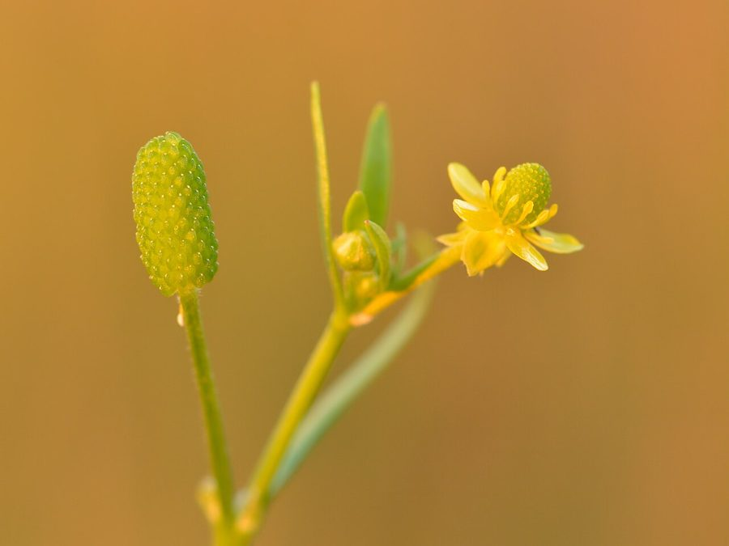

जलधनियाCelery-leaved Buttercup
Ranunculus sceleratus · Ranunculaceae · FLR-0242

- Scientific name वैज्ञानिक नाम
- Ranunculus sceleratus L.
- Family कुल
- Ranunculaceae
- Hindi हिंदी
- जलधनिया
- Local names स्थानीय नाम
- jaldhaniya, jal dhaniya, celery leaved buttercup, buttercup
- Status here यहाँ की स्थिति
- native
- Movement आवागमन
- Resident, here all year
- Known from कहाँ दर्ज
- Others have published records from the wider Awadh–Purvanchal plain, none yet from Basti–Ayodhya अवध–पूर्वांचल से दूसरों के प्रकाशित अभिलेख, बस्ती–अयोध्या से अभी नहीं
- IUCN IUCN
- not evaluated
- Review समीक्षा
- audited and independently read
When to look कब देखें
Expected mainly in January, February, March, April, October, November, December. मुख्यतः जनवरी, फ़रवरी, मार्च, अप्रैल, अक्टूबर, नवंबर, दिसंबर में अपेक्षित।
Uses and possibilities उपयोग और संभावनाएँ
Drawn from the documented uses in the profile below, where each is labelled traditional, current or a research lead. All uses →
जलधनिया / Celery-leaved Buttercup
Ranunculus sceleratus L. — Ranunculaceae
जलधनिया (बाइटिंग बटरकप, जल-मूली) — तालाबों और धान की पाली के किनारों पर उगने वाली भारतीय जल-पौधा, जिसके पत्ते अजवाइन (celery) जैसे होते हैं (जिससे इसका नाम है)। पत्तियाँ बहुत कटी-फटी, दो-तीन बार विभाजित। फूल छोटे, पीले, चमकदार। बहुत विषाक्त है (toxic) — पूरा पौधा, खासकर बीज, जलन पैदा करते हैं। गाय-भैंस यह नहीं खाते। मवेशियों के लिए नुकसानदेह है।
Quick Identification त्वरित पहचान
| Feature | Description |
|---|---|
| Plant form | Erect, branching winter annual, 15–50 cm, glabrous or slightly hairy |
| Leaves | Alternate, ternate or ternately divided, leaflets ovate, deeply lobed or toothed, 0.5–2 cm, resembling celery leaves |
| Flowers | Small, yellow, 5 petals, shiny, 4–6 mm across, in terminal racemes or scattered |
| Fruit | Small, round, dense seed head (receptacle) covered with many tiny achenes |
| Stem | Herbaceous, branching, green or purplish-tinged |
| The test | Chew a leaf or seed: intense burning sensation (biting buttercup) — do not swallow; poisonous |
Field tip: Look in wet places (pond margins, paddy field edges) for a low, branching plant with finely divided celery-like leaves and tiny yellow glossy flowers. The fruit is a distinctive dense, crowded head of tiny seeds. WARNING: All parts are poisonous; skin contact can cause blistering in some people. Do not taste.
हिंदी — कैसे पहचानें: तालाबों के किनारे उगता है। पत्तियाँ अजवाइन जैसी। पीले फूल और बहुत छोटे बीज। CAUTION: पूरा पौधा जहरीला है।
Morphology आकारिकी
Biometrics (typical measurements for plants in wetland areas):
| Measurement | Range |
|---|---|
| Plant height | 15–50 cm |
| Leaf length | 2–5 cm |
| Leaflet size | 0.5–2 cm |
| Flower diameter | 4–6 mm |
| Receptacle (fruit) | 0.8–1.2 cm |
Stem: Herbaceous, branching, glabrous or sparsely hairy, green or reddish-tinged, hollow or with a soft pith.
Leaves: Alternate, petiolate, ternately or biternately divided, the primary divisions being 3, secondary divisions often 3, with leaflets ovate, deeply lobed or toothed, very delicate. The resemblance to celery foliage is striking. The basal leaves are more coarsely lobed; the upper leaves more finely divided.
Flowers: Small, regular, 5-petaled (petals bright yellow, shiny, slightly longer than sepals), 4–6 mm across. Stamens numerous. Flowers are arranged in terminal racemes or scattered on the branches. They are pollinated by small insects but also self-pollinate.
Fruit: A distinctive, compact receptacle (flower base) covered densely with small, crowded achenes, giving it a bumpy, bristly appearance, 0.8–1.2 cm across. The entire seed-head is toxic.
Toxicity: The entire plant, particularly the seeds and aerial parts, contains acrid compounds (protoanemonins and ranunculins) that are vesicant (blistering) and irritant to skin and mucous membranes. The compounds are volatile and partly destroyed by drying, but the plant is dangerous fresh.
हिंदी: पत्तियाँ तीन-तीन भागों में बँटी हुई। बीज का सिर बहुत ही अजीब, खुरदरा। CAUTION: हर भाग विषाक्त है।
Behaviour & Ecology व्यवहार और पारिस्थितिकता
Ranunculus sceleratus is a cool-season buttercup of temperate and subtropical origin, found in wet habitats (pond margins, paddy field edges, marshes) from October through April in eastern UP. The plant grows rapidly in cool moisture and does not compete strongly with denser vegetation but establishes readily in disturbed wetlands and margins.
Seeds are short-lived and germinate in the cool season when soil moisture is adequate. The plant is self-compatible. Small insects visit the flowers for pollen and nectar.
The plant is avoided by livestock due to its acrid, irritating taste and blistering properties. In wet habitats, the plant is rarely eaten even by generalist grazers.
हिंदी: तालाब और पाली के किनारे उगता है। सर्दी में बढ़ता है। पशु नहीं खाते — जलन होती है।
Life Cycle / Phenology जीवन चक्र
| Month / season | Event |
|---|---|
| September–November | Seed germinates in autumn with monsoon decline and cool temperatures |
| November–February | Vegetative growth; plant forms branching rosette |
| February–April | Flowering; profuse bloom if water is available |
| April–May | Fruiting; seed maturation; plant senesces |
Seeds are dormant and germinate in cool conditions. The plant is an obligate winter annual in eastern UP.
हिंदी: अक्टूबर-नवंबर में अंकुरण, दिसंबर-फरवरी में बढ़ोतरी, फरवरी-अप्रैल में फूल।
Associated Species / Interactions संबंधित प्रजातियाँ
- Wetland companions: Found with other water-margin plants such as Water Lettuce, Common Reed, and sedges.
- Paddy field associate: Often appears as a winter weed in wet paddy fields and on bunds.
- Aquatic ecosystem: Provides some food for waterfowl seeds (though the toxicity may limit consumption).
Pests and Diseases कीट और रोग
- No specific serious pests; the plant is toxic to many herbivores and is generally avoided.
- Fungal diseases may occur in very wet conditions but are not serious.
Agricultural / Human Relevance कृषि प्रासंगिकता
Toxicity hazard — READ FIRST:
Ranunculus sceleratus is poisonous in all parts. The plant contains protoanemonins and ranunculins, volatile acrid compounds that cause:
- Skin: Blistering and irritation on contact (especially in sensitive individuals)
- Mouth and throat: Burning, blistering, difficulty swallowing
- Stomach: Burning, salivation, abdominal pain, diarrhoea if swallowed
No human consumption — the plant has no culinary or food use.
Livestock concern: Although toxic, the plant is rarely eaten by livestock due to its acrid taste. However, if present in hay or silage it can cause problems. Animals that do ingest the plant may experience diarrhoea and irritation of the digestive tract.
Traditional medicinal claims: In some traditional systems, the plant has been used (externally, in dilute form) for rheumatism and skin complaints, but such use is dangerous and not recommended.
No traditional medicinal use in India is well-documented.
Today. The plant is a minor wetland weed and a known toxicity hazard.
Research direction (a lead, not a result). The protoanemonins in Ranunculus sceleratus have been studied for antimicrobial and cytotoxic properties; whether these have therapeutic potential (as opposed to toxic) warrants further research.
हिंदी: CAUTION: पूरा पौधा जहरीला है। खाना नहीं चाहिए। पशु नहीं खाते। त्वचा पर जलन होती है। कोई भी भाग निगलना खतरनाक है।
Expected Locally स्थानीय रूप से अपेक्षित
Not a field record. Written from published accounts for eastern Uttar Pradesh. No confirmed local sighting yet — if you have seen it, that is what the atlas needs.
अभी तक स्थानीय पुष्टि नहीं। यह विवरण प्रकाशित स्रोतों से है, किसी अवलोकन से नहीं।
To be expected in wet paddy fields, pond margins, and marshes throughout Basti district from December to April. GBIF holds published records from the wider Awadh–Purvanchal plain. A first local record would document the celery-like foliage and distinctive seed-head.
Distribution वितरण
Global range: Native to temperate Europe and western Asia; widely distributed in temperate and cool subtropical regions.
In India: Present in paddy cultivation and wetlands of the northern plains and hill regions.
In Uttar Pradesh: Distributed in wet habitats, particularly in eastern UP and lower hills.
In Basti district / eastern UP: Expected in paddy fields and wetlands; GBIF records from the wider region.
Research Questions शोध प्रश्न
Anyone can investigate these | कोई भी इन प्रश्नों की जाँच कर सकता है
- In how many paddy fields and pond margins in your village is Celery-leaved Buttercup present, and does it appear every year? — Survey wet habitats in January–March; map presence across three seasons.
- How intense is the biting sensation when you chew a small piece of leaf (just touch to tongue, do not swallow)? — Compare the intensity of sensation from leaves, stems, and seeds; record subjective burning duration.
- Do livestock (cattle, goats, sheep) actually refuse to eat this plant, or do they eat it but then show signs of discomfort? — Observe animals in pastures with the plant present; ask farmers if they have seen animals eating it.
- How many seeds does one plant produce, and in what way is the seed-head adapted for dispersal? — Collect mature plants; count achenes; examine the structure of the receptacle.
- If Celery-leaved Buttercup leaves are dried and stored, do they lose their acrid, biting properties? — Dry leaves thoroughly; test the sensory irritation of dried material compared to fresh. (For safety, taste on tip of tongue only; do not swallow.)
Similar Species मिलती-जुलती प्रजातियाँ
| Species | How to tell apart | हिंदी |
|---|---|---|
| Other Ranunculus species | Many have larger flowers (>1 cm); different leaf shapes; different fruit structures | बड़े फूल, अलग पत्तियाँ |
| Buttercup species | Typically larger, more robust; shiny yellow petals larger | बहुत ज्यादा बड़े फूल |
| Common crowfoot (Ranunculus acris) | Larger plant; larger flowers; different leaf structure | बहुत बड़ा पौधा |
Field rule: A slender, branching plant of wet margins with very finely divided celery-like leaves, tiny shiny yellow flowers, and a distinctive bumpy seed-head is Celery-leaved Buttercup. WARNING: Do not taste — it is poisonous and will cause burning in the mouth.
Taxonomy & Classification वर्गीकरण
Original description. Described by Carl Linnaeus in 1753 in Species Plantarum. The epithet sceleratus means "wicked" or "criminal," referring to its acrid, injurious nature.
Subspecies. Monotypic — no subspecies currently recognised.
Family and order placement. Ranunculaceae, order Ranunculales. The genus Ranunculus holds about 400 species, mostly of temperate origin. Many are toxic in varying degrees.
Phylogenetic notes. Ranunculus sceleratus is closely related to other acrid Ranunculus species and is placed within a clade of temperate-origin buttercups.
IUCN status rationale. Not evaluated. Widespread; not assessed.
Photo Gallery फोटो गैलरी
Photos needed आवश्यक फोटो
- [ ] Whole plant showing branching and leaf structure (पूरा पौधा)
- [ ] Close view of celery-like divided leaves (अजवाइन जैसी पत्तियाँ)
- [ ] Yellow flowers (पीले फूल)
- [ ] Distinctive bumpy seed-head (खुरदरा बीज का सिर)
No photos yet — add field photos to media/species/celery_leaved_buttercup/ and run node scripts/sync_photos.js.
References संदर्भ
- Linnaeus, C. (1753). Species Plantarum. Laurentii Salvii, Holmiae, Vol. 1, p. 555. [original description]
- Hooker, J.D. (1872). The Flora of British India, Vol. 1. L. Reeve, London.
- Duthie, J.F. (1903). Flora of the Upper Gangetic Plain and of the Adjacent Siwalik and Sub-Himalayan Tracts. Government Printing, Calcutta.
- Nicosia, S., Monatella, M., Cianci, R., et al. (1999). Protoanemonin from Ranunculus sceleratus: analysis and biological activity. Planta Medica 65(3): 235–239.
- Norn, S., Kruse, P.R. & Kruse, E. (eds.) (2009). History of Opium Alkaloids and Related Medicinals. Dansk Medicinhistorisk Arbog Supplement. [historical toxicology]
- GBIF Occurrence Data — Ranunculus sceleratus, India (2026).
Source file: species/flora/aquatic/celery_leaved_buttercup.md